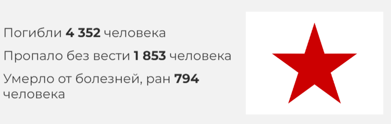
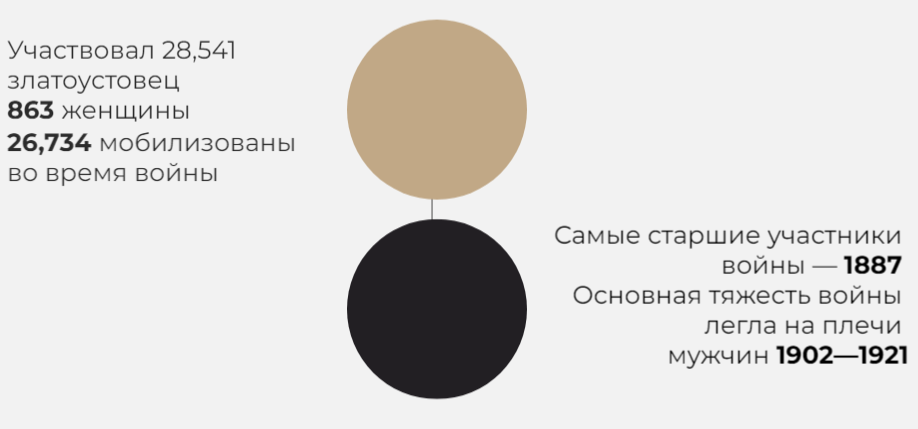

ВКЛАД ЗЛАТОУСТОВЦЕВ
В Великой Отечественной войне участвовал 28.541 златоустовец, в том числе 863 женщины, 1807 человек, встретили войну, уже находясь в Рабоче-крестьянской Красной армии, 26.734 — были призваны и мобилизованы в дни войны (здесь и ниже приводятся сведения из златоустовской Книги Памяти по состоянию на 01.03.2010 г. — Авт.). Вот данные о призыве и мобилизации в Златоусте в годы войны:

По имеющимся данным, участие в боях принимали рабочие, ИТР, служащие, студенты всех предприятий и учреждений города. В 1938—1945 годах в Златоусте в ряды РККА призвано:

Из общего числа
(28.541) златоустовцев, ушедших на фронт, не вернулось домой
6.984 чел. или
24,5%; в том числе:
-
погибло — 4.352 чел.,
-
пропало без вести — 1 853 чел.,
-
умерло от ран, болезней — 794 чел.
Наибольшие потери пришлись на долю следующих возрастов (процент погибших от общего числа призванных соответствующего возраста):
-
1906 г. — 38,6%
-
1911 г. — 27,9%
-
1914 г. — 26,9%
-
1912 г. — 26,0%
-
1909 г. — 25,1%
-
1913 г. — 24,8%
-
1921 г. — 23,6%
-
1903 г. — 23,0%
-
1904 г. — 21,5%
-
1924 г. — 19,1%
Больше всего пропало без вести в
1941—1942 гг., когда советские войска отступали практически по всей линии фронта. Самые большие потери (
2074 чел. — 29,7%) приходятся на переломный
1943 год (Курская битва, освобождение Правобережной Украины, форсирование Днепра). Больше всего пропало без вести в
1941 — 1942 годах. Это время наших неудач и отступления Красной Армии. Больше всего умерло от ран в
1945 году.
Златоустовцы прошли практически по всем тяжёлым дорогами войны. Они с боями отступали от западной границы до Москвы, Воронежа и Волги, а затем, освобождая Родину, дошли до Берлина и Праги.
Захоронения златоустовцев, погибших в боях, находятся от Баренцева и до Чёрного морей. Погибло в боях на территории:
-
Украины — 502 чел.,
-
Новгородской обл. — 441 чел.,
-
Ленинградской обл. — 292 чел.,
-
Белоруссии — 262 чел.,
-
Калининской (ныне Тверской) обл. — 169 чел.,
-
Смоленской обл. — 154 чел.,
-
Орловской обл. — 144 чел.,
-
Псковской обл. — 133 чел.,
-
Латвии — 131 чел.,
-
Сталинградской (ныне Волгоградской) обл.— 123 чел.,
-
Карелии — 66 чел.,
-
Московской обл. — 60 чел.,
-
Курской обл. — 56 чел.,
-
Эстонии — 51 чел.,
-
Ростовской обл. — 50 чел.,
-
Воронежской обл. — 42 чел.
В боях за освобождение Польши погибло
182 златоустовца. На территории Германии пало смертью храбрых —
117 наших земляков, в том числе Восточной Пруссии —
90; на территории Румынии —
27, в Австрии —
21, Чехии и Словакии —
21, в Венгрии —
42.
1373 златоустовца вернулись с фронта инвалидами.
Отважно дрались наши земляки под стенами Москвы и Ленинграда, Одессы, Севастополя и Мурманска, в окопах Сталинграда и на полях Курской дуги, дойдя до столицы врага — Берлина. Среди тех, кто был призван на военную службу из Златоуста, высокого звания Героя Советского Союза удостоены:
БОЯРШИНОВ Василий Иванович — 10.01.1944,
ЗАХАРОВ Николай Дмитриевич — 17.11.1943,
ИВАНОВ Петр Михеевич — 26.10.1944,
МАРТЫНОВ Владимир Кириллович — 24.03.1945,
МЕЛЬНОВ Иван Михайлович — 24.03.1945 (уроженец Златоуста),
НЕВЗГОДОВ Андрей Иванович — 22.02.1944,
ПОНОМАРЕВ Павел Иванович — 24.03.1945,
СТРИЖКОВ Матвей Петрович — 10.01.1944,
ШИРЯЕВ Павел Николаевич — 31.05.1945.
Этого звания также удостоены четверо уроженцев Златоуста, ушедшие на фронт из других городов и районов СССР:
БЕЛОВ Аркадий Степанович — 13.11.1943,
ДУДАРЕВ Павел Иванович — 13.09.1944,
ЕРМОЛАЕВ Александр Александрович — 23.10.1943,
ЛАПШИН Илья Фёдорович — 16.10.1943.
В сентябре 1942 года в районе Златоуста (ст. Тундуш, деревни Куваши и Медведёвка) формировалась 97-я Отдельная стрелковая бригада, которая впоследствии воевала в составе 7-го стрелкового корпуса 64-й армии в Сталинграде. В «Златоустовской энциклопедии» есть специальная словарная статья, посвящённая 97-й бригаде, написанная златоустовцем Евгением Васильевичем Жандаровым, воевавшим в составе этой воинской части. Евгений Васильевич писал, что формировалась их часть из курсантов военных училищ, моряков Тихоокеанского флота, пограничников-дальневосточников и резервов Уральского военного округа. И что любопытно: при формировании воины бригады работали на заводе им. Ленина (завод № 259).
Получив боевое крещение в Сталинграде, часть стала именоваться 13-й гвардейской. А в апреле-мае 1943 года на базе 13-й гвардейской и 92-й Краснознамённой отдельных стрелковых бригад на Воронежском фронте была сформирована 93-я гвардейская Краснознамённая стрелковая дивизия (командир — генерал-майор В. В. Тихомиров). Эта дивизия входила в состав войск 69-й, 5-й гвардейской, 7-й гвардейской, 27-й, снова 7-й гвардейской и 53-й армий. Участвовала в Курской битве, в освобождении Левобережной и Правобережной Украины, в Ясско-Кишинёвской, Дебреценской, Будапештской, Братиславско-Брновской и Пражской наступательных операциях. За боевые заслуги удостоена почётного наименования «Харьковская» (август 1943); свыше 10 тысяч её воинов награждены орденами и медалями, трём присвоено звание Героя Советского Союза.
Вот такая знаменитая воинская часть, история которой начиналась в нашем городе.
В Сталинградской битве принимали участие и многие известные ныне златоустовцы. Назову только несколько имён: почетные граждане Златоуста бывший сапёр Василий Гаврилович Миронов и хирург Марк Иосифович Соколов, известный в городе врач-терапевт Иосиф Минеевич Куколев.
По данным Златоустовской Книги Памяти в сталинградских боях погибло 123 человека (в основном в районе Бекетовки, на родине знаменитого композитора Александры Пахмутовой).
Обо всех земляках, оставшихся лежать на полях Сталинградской битвы, вряд ли можно сегодня подробно рассказать, но вот вам хотя бы одна история.
В 1970 году в редакцию городской газеты «Златоустовский рабочий пришло письмо от полковника в отставке В. Чекина:
«Уважаемая редакция!
Пишет Вам гвардии полковник в отставке Чекин Василий Артемьевич. Был у меня друг, ваш земляк Андрей Слизков. Хороший и отчаянный парень. Похоронил я его под Сталинградом. В память о нём и других пишу повесть «В огне Сталинграда».
С уважением и приветом В. Чекин.»
Газета опубликовала присланный отрывок из повести. Трудно сказать, закончил ли автор свою повесть, была ли она опубликована или нет… И даже вездесущий интернет не дал ответа на этот вопрос. А вот напечатанный отрывок остался в газетных подшивках:
«…Их было трое: Чайкин, Слизков и Катышев. Три бравых лейтенанта, окончивших артучилище ещё до войны. Военная судьба свела их в битве за город на Волге.
Сегодня у них большое горе, Катышев позвонил Чайкину: — Васька, быстро сюда, Андрей убит….
Несмотря на сильный огонь противника, Чайкин бежит. Перед ним земля бугром встаёт, рот забивает сладковатой пылью, а он бежит: «Нет Андрея…».
Андрей лежит возле окопа и тихо стонет. Катышев плачет, у Чайкина ком в горле, глаза не видят. Стонет Андрей, а помочь нечем. Обе ступни по голень оторваны.
Чайкин вспоминает, как они дружили, учились, работали, занимались в акробатической секции, танцевали на сцене, гуляли под каштанами Киева, потом обороняли его.
Чайкину не верится, что нет Андрея. Ему кажется, вот сейчас он вскочит, быстро и ловко, как на показательных конно-артиллерийских выступлениях перед войной. Вспомнил, как по пути на фронт, в Златоусте, Андрея встречала мать, маленькая, щупленькая старушка. Обнимая и лаская его, она совала ему гостинцы. Он краснел и старался вернуть их обратно, а она всё приговаривала: «Сама пекла, сама…твои любименькие…». Стояли недолго, поезд тронулся, а мать всё не отпускала Андрея. Он на ходу вскочил в вагон и долго махал рукой, отворачивая от друзей лицо…
Чайкин сел, прикрыл ноги плащпалаткой, будто им стало холодно. Нет, не встанет Андрей. Глаза его стекленеют. Чайкин закрывает их, расстегивает карманы Андреевой гимнастёрки, вытаскивает комсомольский билет, письма матери из Златоуста и любимой девушке Нине.
Хоронили Андрея под залпы артиллерии и грохот разрывов. Земля разверзлась под ногами. Солнцу стало больно, и оно скрылось в чёрном пороховом дыму».
Дополнить этот рассказ можно сведениями из Златоустовской Книги Памяти:
«Слизков Андрей Максимович, 1919г. р.,*, 00.00.1900 г., старший лейтенант, Погиб 23 сентября 1942 г. Похоронен в Сталинградской (Волгоградской) области на высоте 154,2. На фронте воевал и его младший брат Николай Максимович Слизков (1924 г. р., призван Златоустовским ГВК 02.06.1942 г., сержант)».
В своё время была в Златоусте и Сталинградская улица (на 7-м жилучастке), хранившая память о крупнейшем сражении Великой Отечественной войны — Сталинградской битве. Но потом она… исчезла.
Произошло это в 1961 году, в самый разгар антисталинской кампании, проводившейся Никитой Хрущёвым. Тогда в Златоусте вместо проспекта Сталина появился проспект Мира, Сталинградская улица стала Ленинградской, а улицу Сталина назвали в честь И. М. Мельнова (Героя Советского Союза, уроженца Златоуста).
К слову сказать, после победы под Сталинградом Сталинградские улицы и площади появились во многих европейских городах. И сегодня вы можете при желании прогуляться по Сталинградской улице в Брюсселе или побывать на Сталинградском бульваре в Париже (правда, Сталинградскую площадь политкорректные парижане в 1995 году окрестили площадью Сталинградской битвы).
Интересно, что в конце 2002 года в связи с приближавшимся тогда 60-летием победы советских войск в Сталинградской битве Сталинградские улицы появились… нет, нет, не в столицах, а в станицах — Нехаевской и Упорниковской Волгоградской области.